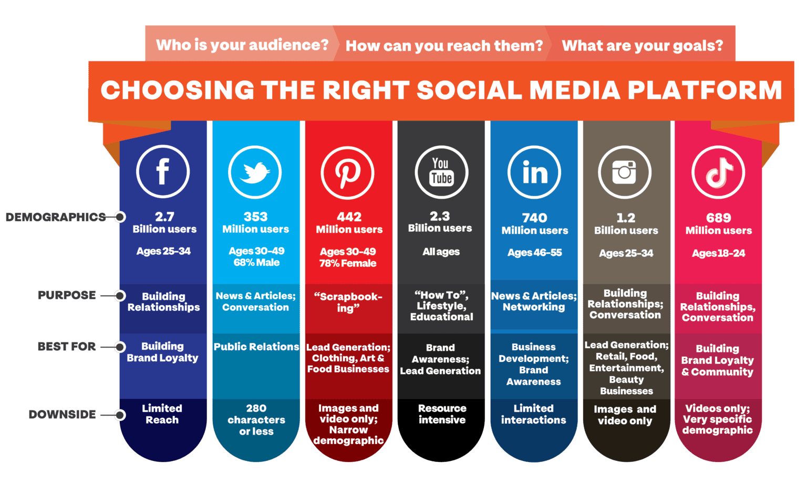
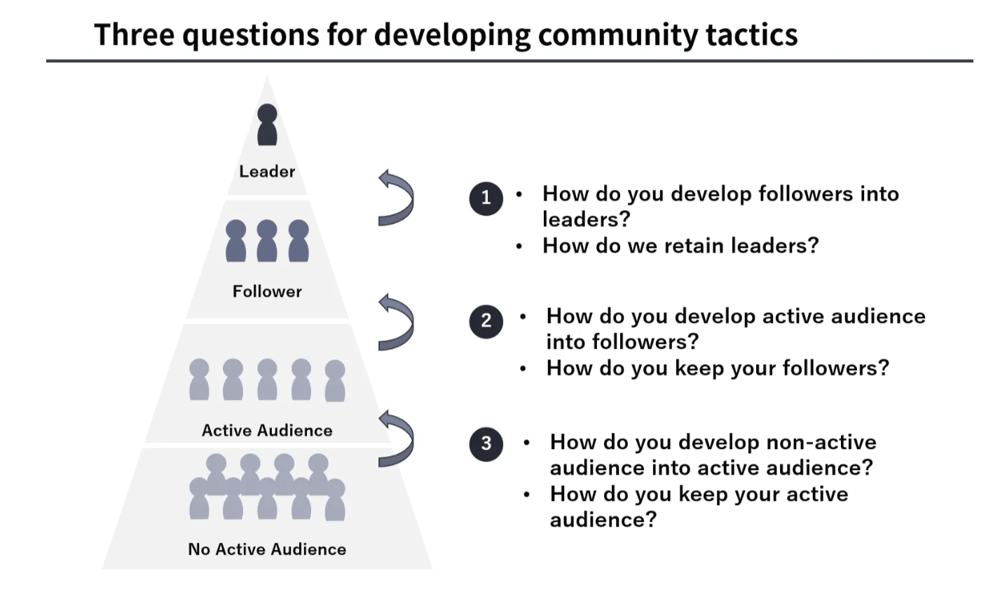
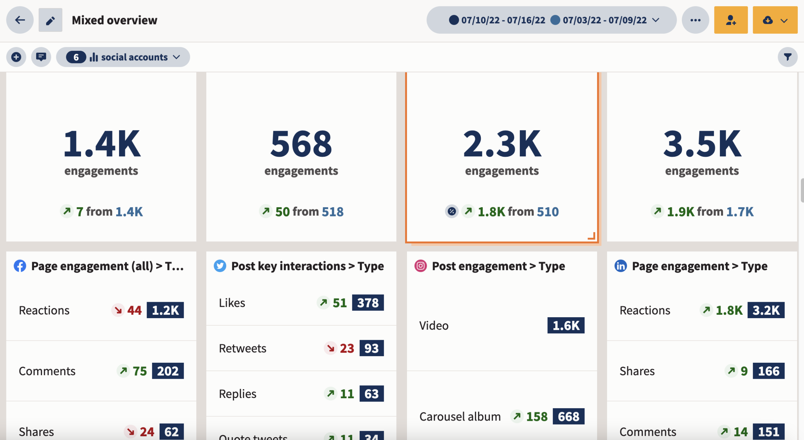
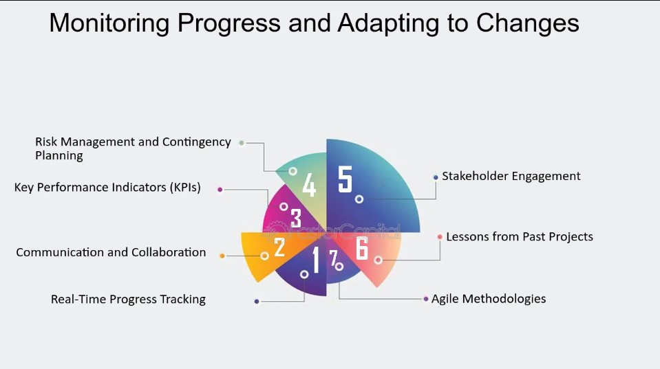
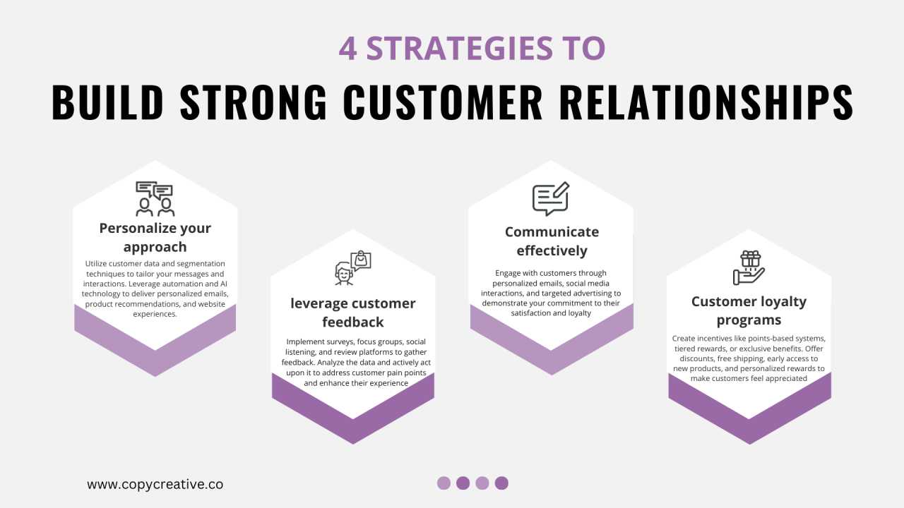
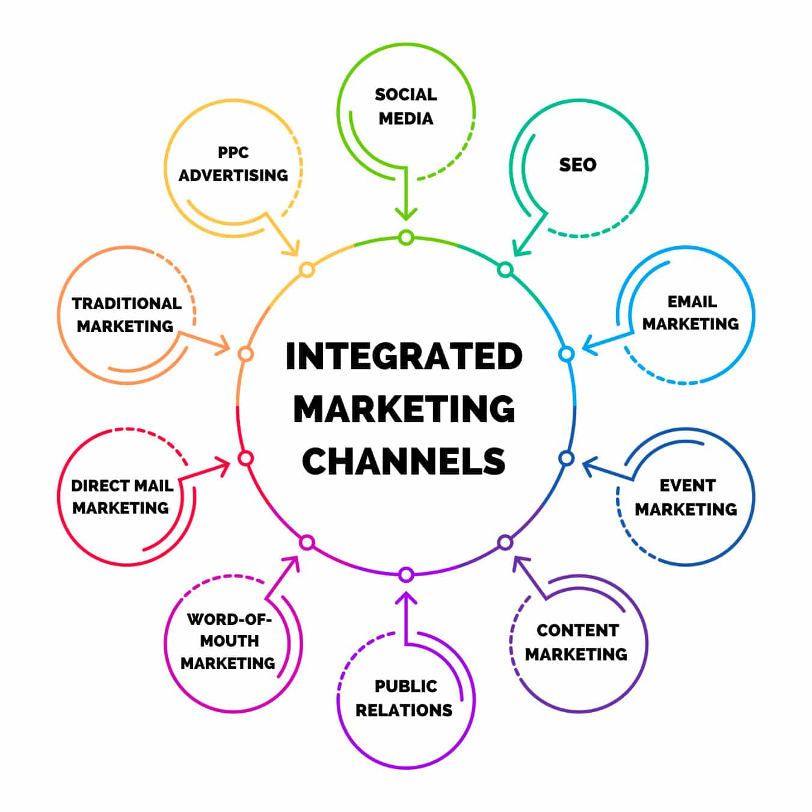

1. Define Your Goals and Target Audience:

2. Choose the Right Platform:

3. Develop a Community Strategy:

4. Foster Active Participation:

5. Leverage the Power of Your Members:

6. Analyze and Adapt:

7. Build Relationships and Trust:

8. Integrate with Other Marketing Channels:

9. Continuously Learn and Improve: